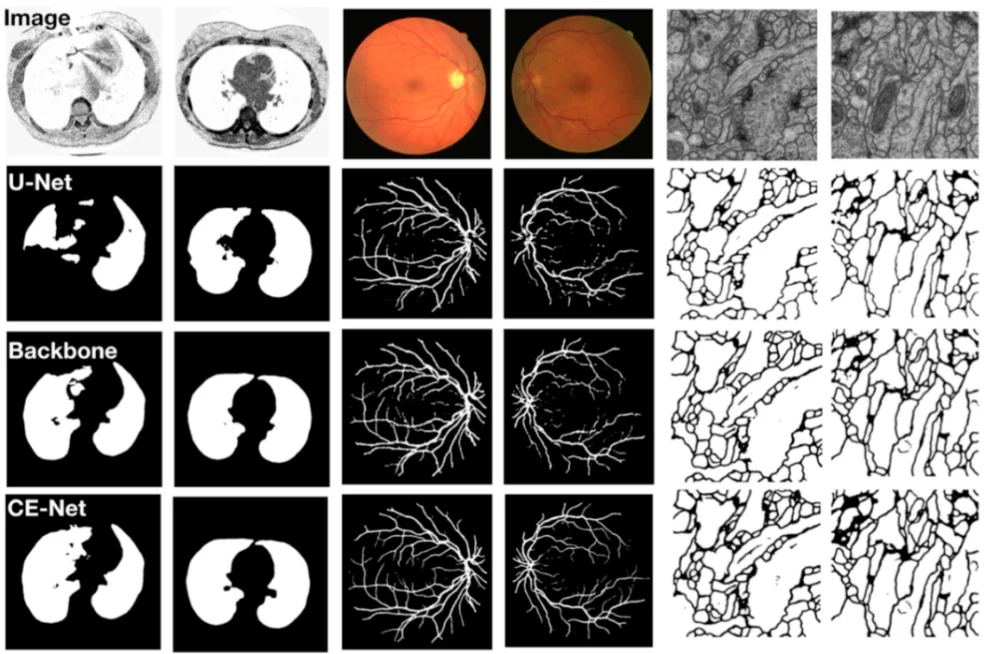
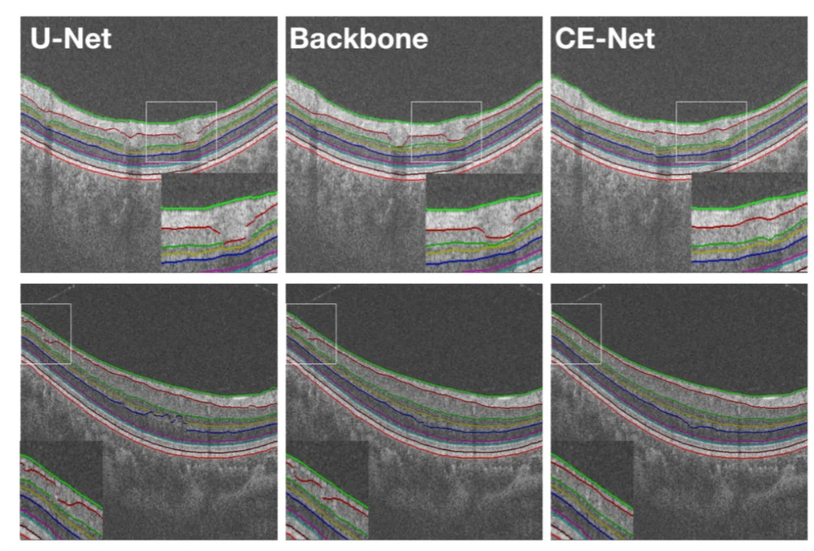
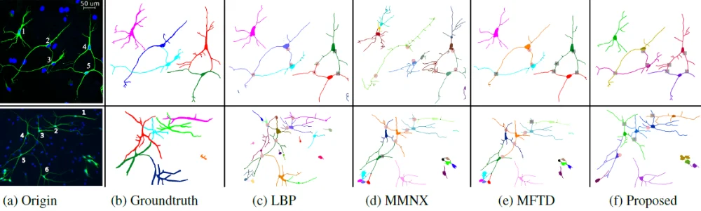
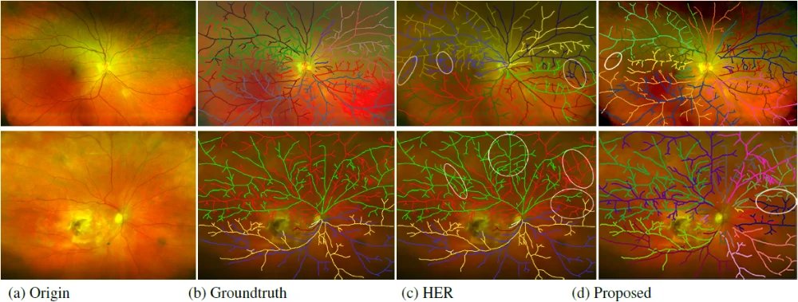
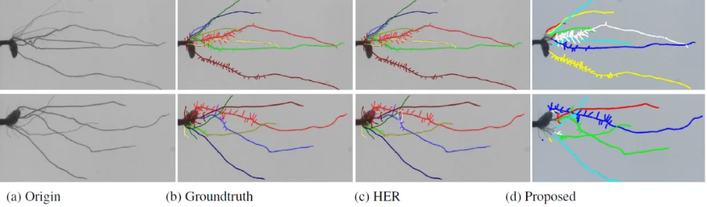

基于U-Net的深度学习分割框架已经被广泛应用于医学图像处理中，但U-Net网络中，连续的池化操作以及带有步幅卷积运算会导致图像中部分细节信息的丢失。树状结构的拓扑建立，对识别和区分单个血管和神经纤维分支至关重要，并能反映出解剖学上不同树状结构的连通性。当两个或者更多的线状结构交叉或者重叠时，现有的拓扑重建方法很难准确的判断连接关系。
针对以上问题，近期，慈溪医工所医学影像事业部（iMED）程骏团队和赵一天团队，分别提出了一种基于上下文编码网络(context encoder network，简称CE-Net)的医学影像分割方法和基于优势集的树状结构拓扑重建方法。
程骏团队提出了通过一种上下文编码网络(context encoder network，简称CE-Net)，在医学图像分割中获取高阶的语义特征并保留更多细节信息。CE-Net主要包括三个主要组件:特征编码器模块（Encoder）、上下文提取器（context Extractor）和特征解码器模块（Decoder）。实验结果表明：该方法在视盘分割、血管检测、肺分割、细胞轮廓分割、视网膜光学相干断层扫描分割等医学影像处理方面，分割性能均优于原始的U-Net，并取得了目前最优的结果。该医学图像分割算法已被领域顶级期刊IEEE Transaction on Medical Imaging(TMI)（DOI：10.1109/TMI.2019.2903562）收录。
赵一天团队提出了一种基于优势集的拓扑重建方法，该方法创新性的结合了优势集和SSIM相似度度量，充分考虑树状结构的对比度及其几何特性，并分别在局部以及全局范围中来表示曲线结构的特征，将拓扑结构的重建问题转化为数学上的聚类问题，采用优势集实现结构相似性的聚类。该方法分别在视网膜血管，脑神经元，以及树根结构中做了验证试验（如图3，4，5），结果表明，重建精度高于领域内现有的相关工作，目前该工作相关内容已被计算机视觉和人工智能的顶级会议International Conference on Computer Vision and Pattern Recognition（CVPR’2019）收录。
该系列研究工作得到宁波市3315创新团队，国家自然科学基金委，以及浙江省自然科学基金重点项目的支持。

图1：算法在肺、血管、细胞轮廓上的应用：从上到下依次是原图、U-Net、backbone、CE-Net结果

图2：算法在视网膜图像上的应用：从左到右依次是原图、U-Net、backbone、CE-Net结果

图3：算法在脑神经元上的应用：从左至右依次为原图，金标准，LBP算法的结果，MMNX结果，MFTD结果，所提算法结果

图4：算法在视网膜图像上的应用：从左至右依次为原图，金标准，HER结果，所提算法结果

图5：算法在树根结构上的应用：从左至右依次为原图，金标准，HER结果，所提算法结果